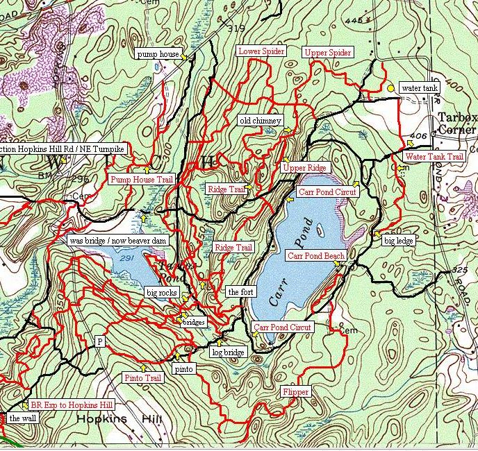

Big
River Bike
Hash
Run #1219 , August 10, 2009
Hare: Oozing Syphilitic Dictaphone
Location: Big River
Weather: 80's, Clear.
Present: Dr
WHO, Tinker, Florence Wallbanger, Wee Balls, Amish It Head, Flexible Video
Endoscope, Just Pat, Dicks On Broadway, WIPOS, Basket Boom Boom, Bondo
Jovi.
The Run:
I suppose someone
remembers exactly how this hash went. But WHO doesn’t. All I can remember is
that the hare decided to make it a bike hash. WHO was stupid enough to bring a
bike? No, WHO wasn’t. Rather than try to recreate the actual run at this late
date, I’ll provide a visual clue for those that weren’t there (the lucky ones.)

The picture shows
the area in question. The Black trails were used by the bikers (the hare,
Basket, Bondo, and Flobanger.) The red trails were explored by the rest. There
was a beer check, but where, I haven’t a clue. This is what comes of delaying
write-ups for so many months. If the write-up has any detail, it must have been
a good hash. If the write-up sucks, and fills up paragraphs with stupid
pictures, maps, and no detail whatsoever, the hash must have sucked. This in
reality, is a pretty good system.
Running instead of biking on a bike hash is fraught with danger.
The run could be a mini-marathon. There could be miles of pavement. The shiggy,
if any, will be minimal. Short-cutting is a necessity for the runners, but could
be impossible. If any of these had happened on this run, WHO would have
remembered. So, there you have it. The run sucked. -6.9! Basket was hashit. JC’s
(formerly Rosies, formerly Marks) was the final destination. Thank you for your
attention.
On On